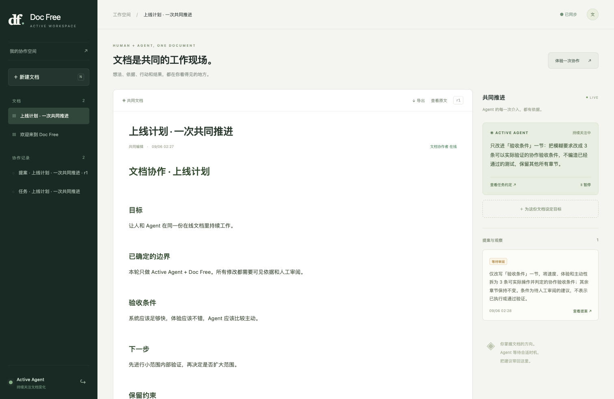

ACTIVE AGENT × DOC FREE / EVOLVE文档是共同的工作现场。
持续目标、自动观察、有据提案、在线审阅。人和 Agent 看到同一份工作上下文。
0.2 演进预览 · 2026-09-06

这一轮的可验证交付
22Python 测试12真实服务集成测试r1 → r2真实模型提案接受7共享文档 MCP 工具 工作如何持续推进
人写目标与正文 →
后台观察与等待 →
模型提出有据修改 →
同一工作台审阅
目标、依据、提案和结果都是普通文档。SQLite 仅保存调度检查点。正文变了，旧提案必须让位于当前版本。
本轮实现记录
| 项目 | Commit | 时间 | 描述 |
|---|
| Active Agent | c05f904 | 2026-09-06T02:41:10+08:00 | 主动文档运行时与模型协议 |
| Doc Free | f5c3b6f | 2026-09-06T02:41:11+08:00 | 工作台、共享契约、CRDT 冲突与恢复 |
详细文档
能力边界
已实现本机可运行闭环，尚未完成细粒度权限、富内容无损往返、分布式调度和规模化压力验证。100k stars 是愿景；产品质量通过可复现行为累积。IM 不在本轮范围。